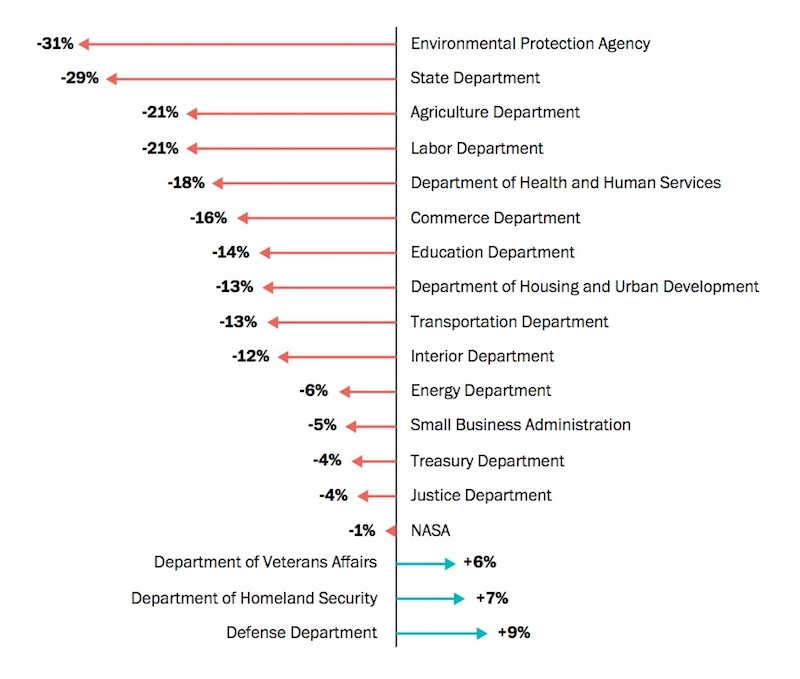
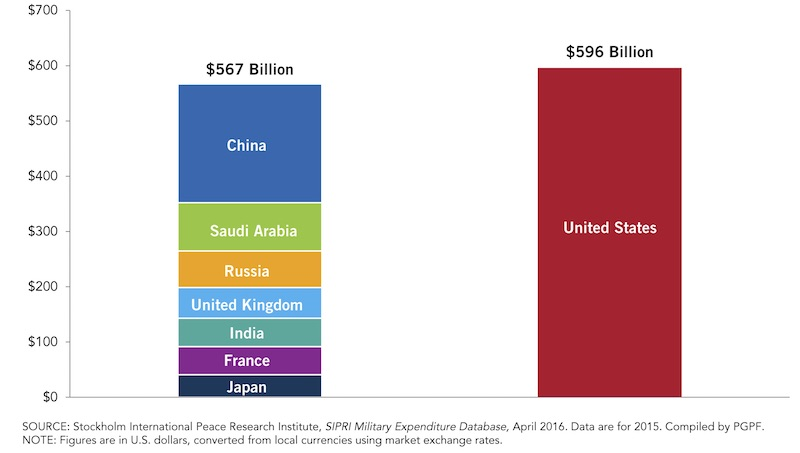
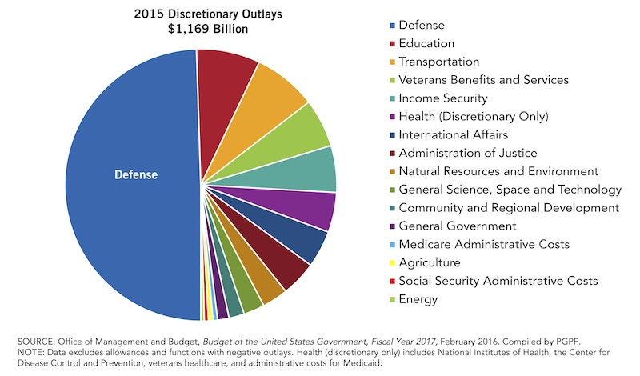

2017-03-18 08:00
Trump’s 2018 budget, says OMB Director Mick Mulvaney, is supposed to “send a message to our allies and our potential adversaries that this is a strong-power administration.” In fact weaponization of the budget is pretty much Trump’s only objective:
“The core of my first Budget Blueprint is the rebuilding of our Nation’s military without adding to our Federal deficit. There is a $54 billion increase in defense spending in 2018 that is offset by targeted reductions elsewhere. […] We must ensure that our courageous servicemen and women have the tools they need to deter war, and when called upon to fight, do only one thing: Win. […] this public safety and national security Budget Blueprint is a message to the world—a message of American strength, security, and resolve.”
The 2018 budget takes money, quite literally, from food programs for children, seniors, the poor, and strips virtually every federal program of value to the average citizen. Tens of billions of dollars – on top of the excess hundreds of millions already being spent – will be redirected to homeland security and the military. The Washington Post has examined the percentages of cuts to federal programs:

If this budget sends any kind of message to NATO allies whom Trump has described as “freeloaders” it is that the United States will continue to spend more than half its discretionary budget on war. This level of obscene military spending tells allies there really is no need to increase their own defense spending. Allies can continue building their economies and providing for their citizens’ real needs with continued modest defense spending. It will be the American taxpayer who must do without in order to pay for weapons we don’t really need.
And if the 2018 budget sends any kind of message to potential adversaries, it is that the U.S. relishes its role as rogue nation and that they’ll need to raise the level of their own military spending.
But these U.S. “Defense” outlays are not even necessary. Already the United States throws more at war spending than the nearest seven nations combined:

Trump voters chose combat and elected a combatative president. And this is what they will get. But they probably thought they would get some “American greatness” too.
Trump is a sociopath whose idea of playing president is to throw around military power. His supporters were given simple formulas for an American resurgence that simply won’t stand up to scrutiny. These voters should have known better than to trust a casino developer who profited with other people’s money and who regularly stiffed his contractors. He’s a serial liar who’d make P.T. Barnum envious.
But he had help.
Conservative ideologues have been selling a war machine and income inequality for years. For instance, Breitbart News claims the U.S. military has been “depleted” by reductions under the Obama administration.
But Trump voters are not going to get much “make America great” out of the the 2018 budget. The “Budget Blueprint to Make America Great Again” threatens economc progress for working Americans and eliminates the lifelines they depend on – all while siphoning away tax money for corporate welfare schemes.
Yet Conservatives are all over the map on budget priorities. The American Spectator applauds the president’s “terrible swift sword.” But paleoconservatives at the American Conservative and neocons at Commentary don’t like the defunding of State Department and UN programs like Unicef. Even with a 9% increase in war spending the American Enterprise Institute claims the Trump budget doesn’t go far enough in diverting taxpayer money to defense contractors. The CATO Institute freely admits the Trump budget is a tool for putting public money into the hands of private investors, but it can’t contain its impatience to steal even more from the taxpayer:
“Trump proposes to devolve to state and local governments and private parties a number of programs now funded by the feds. In theory, the result should be greater efficiency and less regulation. However, in most of the areas I know about, Trump could have gone further and produced even better results.”
The Federalist complains that there is too much hand-wringing over the budget and that it’s all about eliminating bureaucracy – if you don’t count America’s massive “defense” and homeland security complex as a bureaucracy. Free market fundamentalists at the Foundation for Economic Education admit that the Trump budget is Big Government on steroids – but they aren’t buying his hype about job creation. Meanwhile, the Heritage Foundation calls it a “skinny budget” and applauds cost savings by slashing social and health programs for working people. America’s fake news center, FOX News, dismisses the end of the Meals on Wheels program with jokes.
The Marie Antoinette of the Trump administration, “let them eat cake” Education Secretary Betsy DeVos, says, “there’s no such thing as a free lunch.” For school kids, yes, that’s true. But for billionaires there’s no end of caviar to be found in the 2018 budget.
While the GOP is full of ideologues competing for their own pet budget priorities, economists generally dismiss Trump’s budget as a fast-approaching train wreck for the economy. The Brookings Institution says Trump’s budget priorities will seriously hobble the economy by eliminating programs that help small businesses, aid technology and research, and help businesses improve productivity. Brookings warns the president that only competitiveness – not protectionism – can help American business. It concludes:
“Trump’s budget, like much of his rhetoric, is fundamentally backward-looking. It attempts to support a 21st century economy with 20th century tools and ideas.”
In looking at the federal budget, we have to distinguish the pension and health benefits that the federal government holds and manages for retirees – called “entitlements” or non-discretionary spending – as sacrosanct funds. These are for a citizen’s rainy day fund. It’s personal money.
The federal budget also includes “discretionary” expenses – money normally targeted for the common good – whether it’s the EPA, NASA, education, the arts – or for war. Under both Republicans and Democrats discretionary spending has often been mainly for war:

But now, with Trump’s draconian cuts to social, business, and welfare programs, the federal budget has become even more weaponized than in previous years.